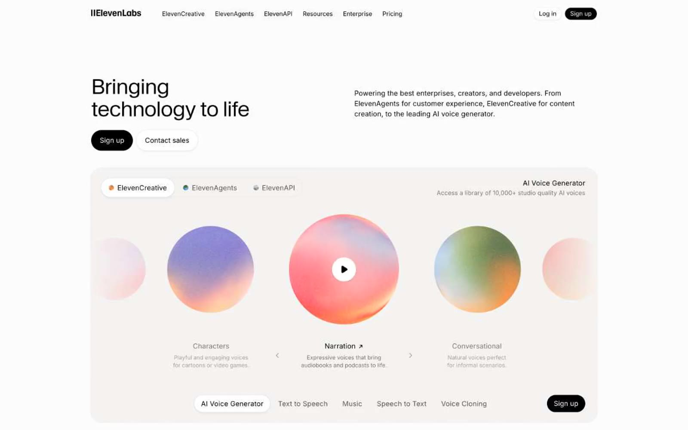

ElevenLabs 的 Design.md 主题展示，围绕AI、浅色界面、SaaS 产品、开发工具组织页面。
Explore ElevenLabs's light AI design system: Eggshell #fdfcfc, Powder #f5f3f1 colors, Waldenburg, WaldenburgFH typography, and DESIGN.md for AI agents.

#fdfcfc: #fdfcfc#f5f3f1: #f5f3f1#e5e5e5: #e5e5e5#b1b0b0: #b1b0b0#777169: #777169#000000: #000000#ffffff: #ffffff#a59f97: #a59f97#0447ff: #0447ff#ff4704: #ff4704#3a1c71: #3a1c71#d76d77: #d76d77fontFamily: [object Object]fontSize: [object Object]lineHeight: [object Object]letterSpacing: [object Object]control: 12pxcard: 16pxpreview: 24pxcontrolInset: 16pxmobileGutter: 16pxouterGutter: 32pxsection: 64px